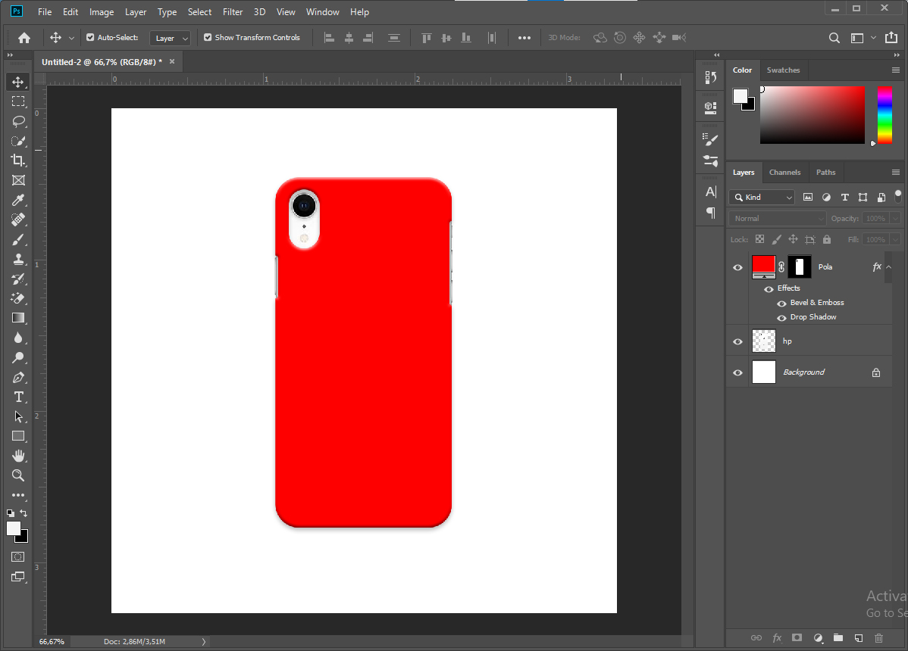
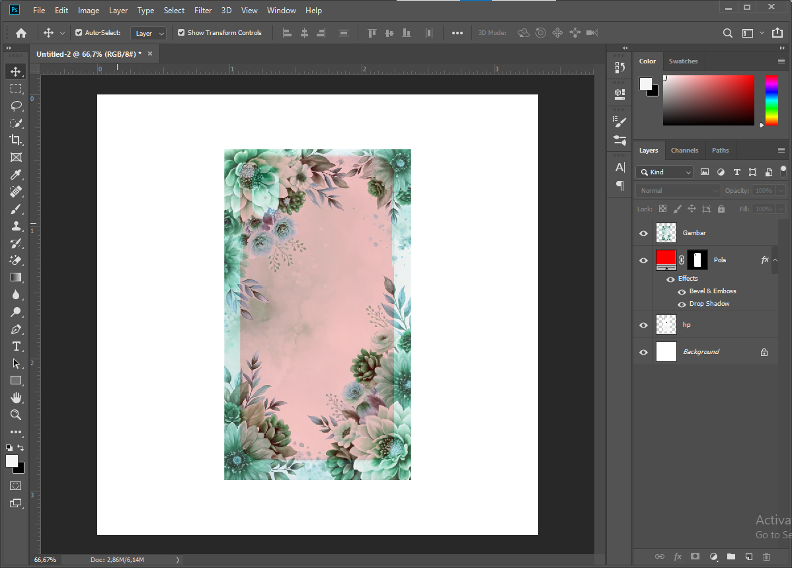
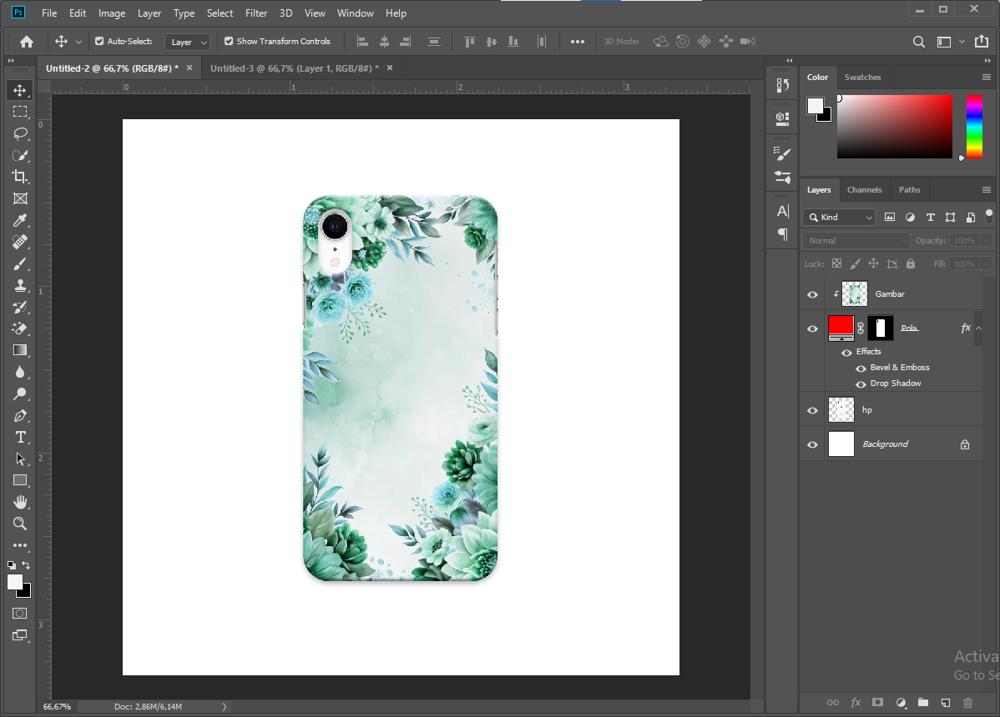
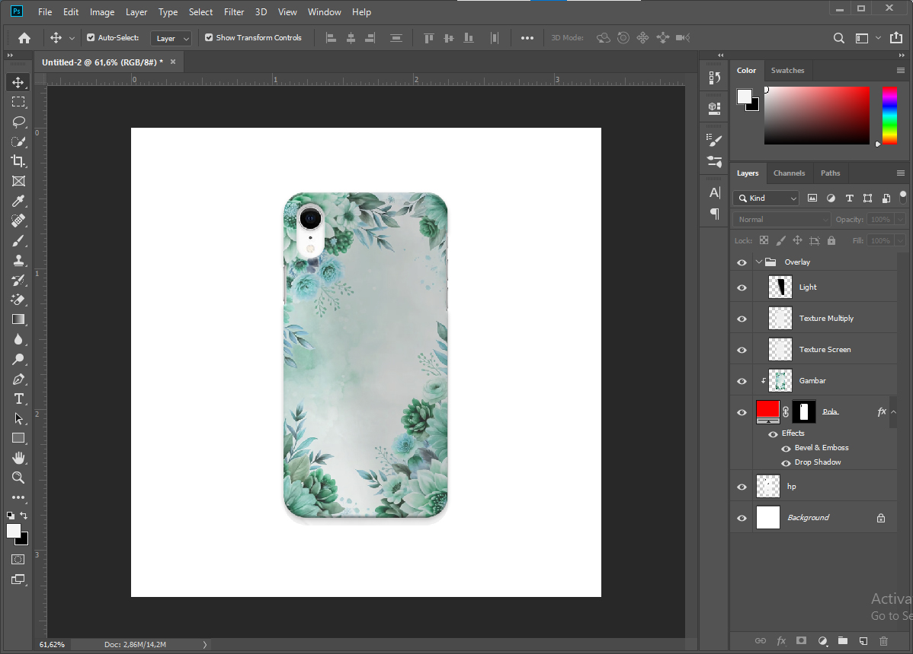

Casing Hp - Online Shop
Cahaya Bintang Intri - 2020
Desain Casing hp ini hanya desain mockup untuk kebutuhan foto produk online shop, hingga siap untuk dijadikan file cetak.
Untuk bahan file yang saya tampilkan ini tidak bisa saya sertakan dengan file asli yang ada di perusahaan, karena itu melanggar hak cipta perusahaan dan izin dari perusahaan tempat saya bekerja dulu.
Bahan Mockup
Untuk bahan bahan mockup, saya mencari 2 gambar atau lebih yang tersedia di google dengan kualitas baik, yaitu Handphone, dan gambar yang akan di masukan pada mockupnya.
Pembuatan Mockup Menggunakan Photoshop
Layer Style pada pola case
Penggunaan Bevel & Emboss serta Drop Shadow agar terlihat seperti case 3D
Memasukan gambar pada pola case
Posisikan gambar tepat di tengah pola, beri sedikit jarak lebih pada setiap sisi (cara ini saya lakuin untuk memudahkan posisi saat nanti pencetakan ke media cetak).
 Sebenarnya dibagian ini hasilnya sudah bisa di gunakan untuk di upload, tapi namanya foto produk harus di buat secantik mungkin bukan?
Jadi saya kasih sedikit Overlay texture dan posisi cahaya untuk polanya, simple dan ga terlalu terlihat, tapi setiap detail menjadi ciri khas tersendiri.
Sentuhan terakhir (opsional)
Penambahan background bisa membuat gambar lebih hidup dan menarik.